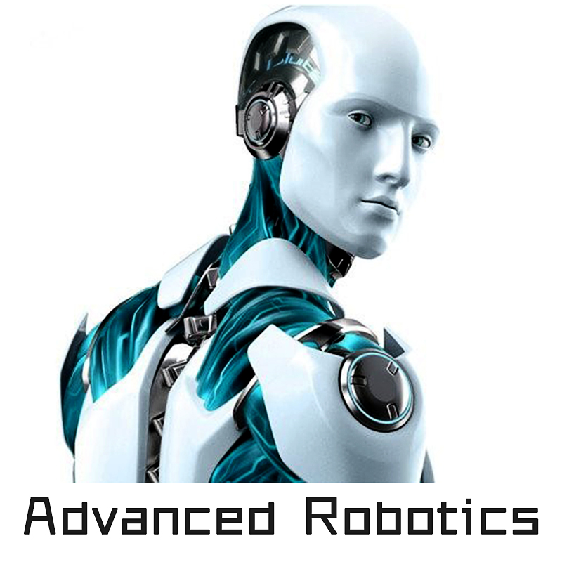

|
This block focus on Artificial Intelligence which makes the computers smarter
than human beings for reinforcing human beings' functions.
|
 |
This blocks focus on the combination of artificial intelligence and robotics,
thus the robots can be smarter and more similar with human. So the final goal
is to create an intelligent humanoid robot which can live with human beings.
|
|  |
This block focus on robotics which concerns about Robot Localization, Navigation,
Planing, Controlling, Perception and Intelligent Reasoning and Decision.
|